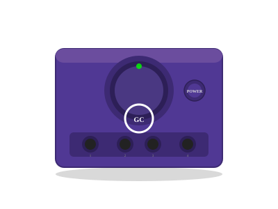

2001 年发布
Nintendo GameCube
GameCube · 饭盒主机 · WaveBird无线手柄首创
2174万
全球销量
485MHz
CPU主频
迷你DVD
专用光驱
WaveBird
首款无线手柄
📖 历史与背景
2001年，任天堂推出GameCube（GC），因紫色外观和"饭盒"造型被嘲笑。GC的硬件性能实际上强于PS2（GPU是ATI Flipper，支持硬件变换光照），但因为第三方支持不足和缺乏DVD播放功能，销量仅2174万台，远低于PS2的1.55亿台。
GC最大的创新是WaveBird无线手柄——首款商用的无线手柄，使用RF信号（不是蓝牙） instead of infrared，延迟极低，电池续航长达100小时。WaveBird成为EVO Championship Series的官方指定手柄。
GC的另一个特点是专用迷你DVD光驱（GameCube Disc，容量1.5GB），比标准DVD小，且不能播放DVD电影。任天堂认为"游戏机就应该玩游戏"，但这导致消费者更愿意买能播放DVD的PS2或Xbox。
⚙️ 硬件规格
CPU
IBM Gekko PowerPC 485MHz
GPU
ATI Flipper 162MHz
内存
43MB（24+16+3MB分层）
光驱
GameCube Disc（1.5GB迷你DVD）
音频
Dolby Pro Logic II
手柄
WaveBird（首款无线手柄）
在线
有线网卡（选配）
向下兼容
不支持（无N64兼容）
🎮 经典游戏阵容
任天堂明星大乱斗DX
2001 · 格斗
740万份，EVO正式项目
马里奥卡丁车 双重冲击
2003 · 赛车
700万份，双角色赛车创新
塞尔达传说：风之杖
2002 · ARPG
430万份，卡通渲染风格
路易吉洋楼
2001 · 动作冒险
260万份，路易吉首次当主角
大金刚 丛林节奏
2004 · 音乐动作
320万份，音乐节奏游戏
火焰之纹章 苍炎轨迹
2005 · SRPG
GC独占，系列首款3D
任天堂明星大乱斗X
2008 · 格斗
Wii游戏，但GC开创了系列
合金装备 孪蛇
2004 · 潜行
小岛秀夫监制，GC独占
📦 型号演变
- GameCube原版（2001）：紫色"饭盒"造型，WaveBird手柄
- GameCube薄版（2003）：更安静，取消部分扩展接口
- Panasonic Q（2001）：日本独家，内置DVD播放器，银色外壳
💡 趣闻与冷知识
- WaveBird是首款商用的无线手柄，使用RF信号，延迟极低，电池续航100小时
- GC的1T-SRAM超低延迟内存让画面更稳定，但容量仅43MB（PS2有32MB+但延迟高）
- 任天堂曾计划让GC向下兼容N64，但最终取消，原因是"N64游戏已经可以在Wii上玩"
- 《任天堂明星大乱斗DX》是EVO Championship Series的正式项目，至今仍有人玩
- Panasonic Q是GC的唯一"非饭盒"版本，内置DVD播放器，但仅在日本销售
- GC的失败让任天堂在Wii时代彻底改变策略（体感>性能），最终成功